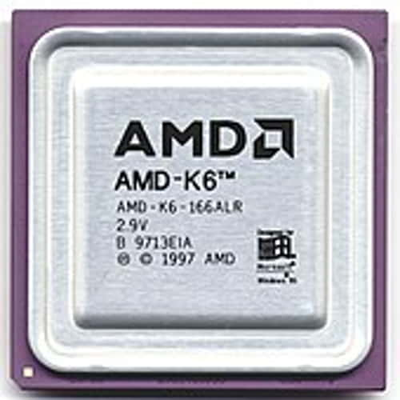
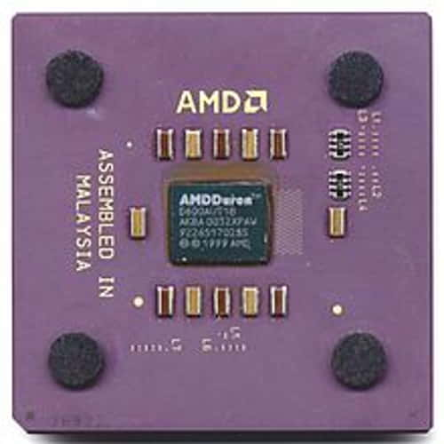
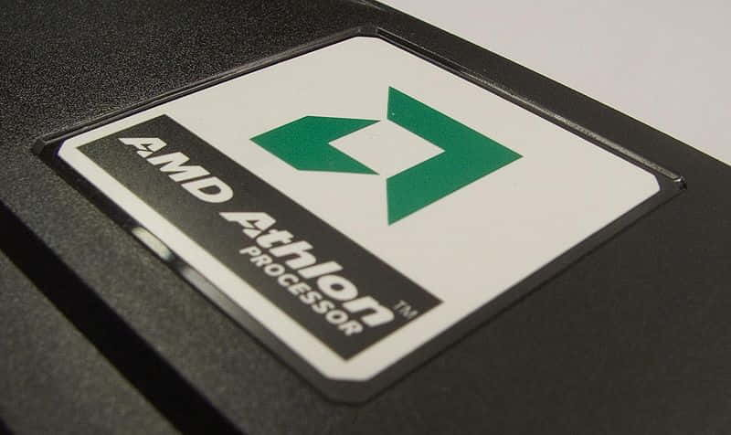
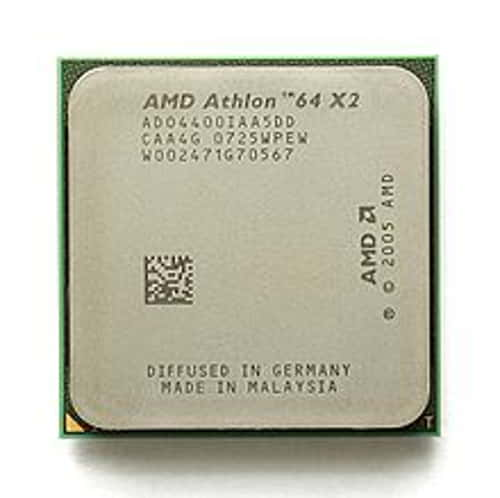
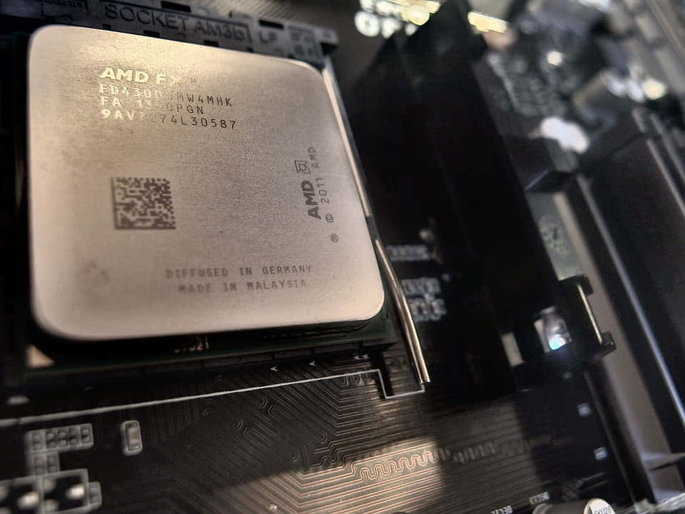
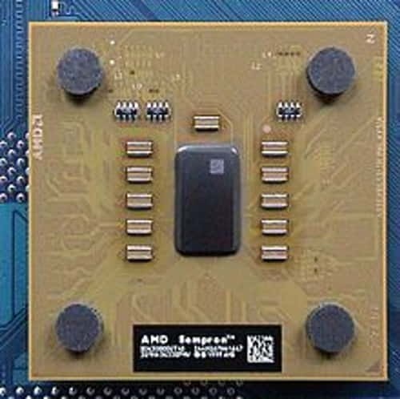
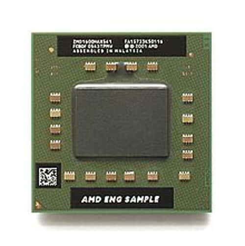
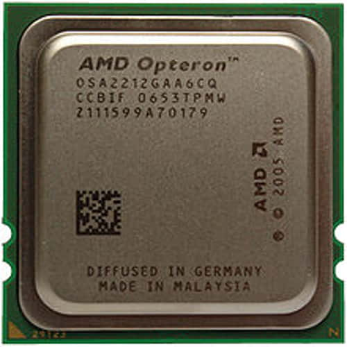
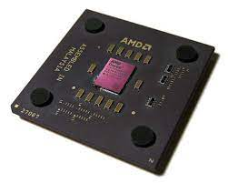
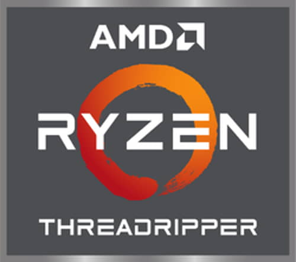

Processor Generasi Kedua K-6
Processor Generasi Ketiga Duron 
Processor Generasi Keempat Athlon
Processor Generasi Kelima Athlon 64 X2
Processor Generasi Keenam Athlon 64 FX
Processor Generasi Ketujuh Sempron
Processor Generasi Delapan 64 X2 Dual Core
Processor Generasi Sembilan Opteron
Processor Generasi Sepuluh Cadiz
Processor Generasi Sebelas Ryzen